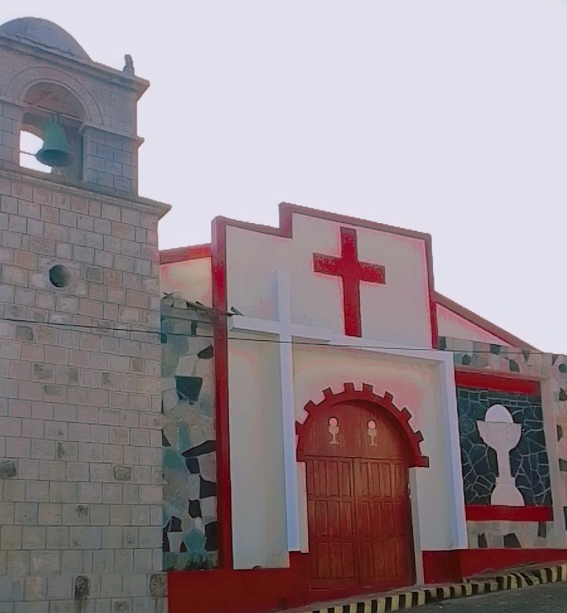
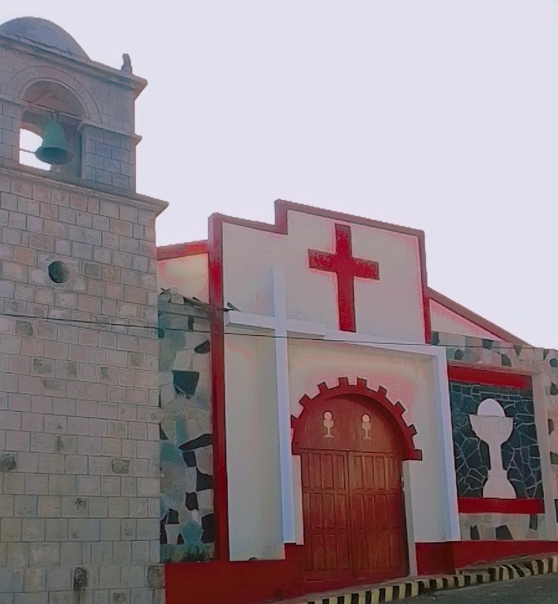

HISTORIA DE JUNCAL
JUNCAL es un distrito perteneciente a la region de puno,es una altura de friaje, se creo en el siglo 18 ahi en esos años vivian acendados. el distrito de juncal fue fundado por 3 familias que en esos años el pueblo de juncal fue mejorado .La capital de juncal era San Antonio de Esquilache se traslado por la fiesta del Rosario asi se convirtio en un distrito En la localidad de juncal se dio inicio el mejoramiento del municipio gracias alos pobladores especialmente por los diregentes como el señor Leoncio,el señor Roberto y otros año tras años fue mejorando y fue omentando los pobladores con sus familias ,las casa de paja fueron comvirtiendose de calamina y el local de reuniones se comvertio el municipio y al pasar del los años fueron mejorando .